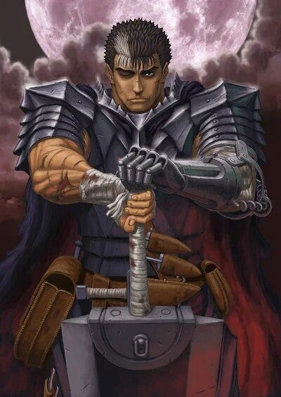

Compañía de GutsGuts
El Espadachín Negro
Único superviviente del Eclipse que no vendió su alma. Arrastra la marca de sacrificio y un mandoble demasiado grande para cualquier otra persona.
Vivo
Ver ficha